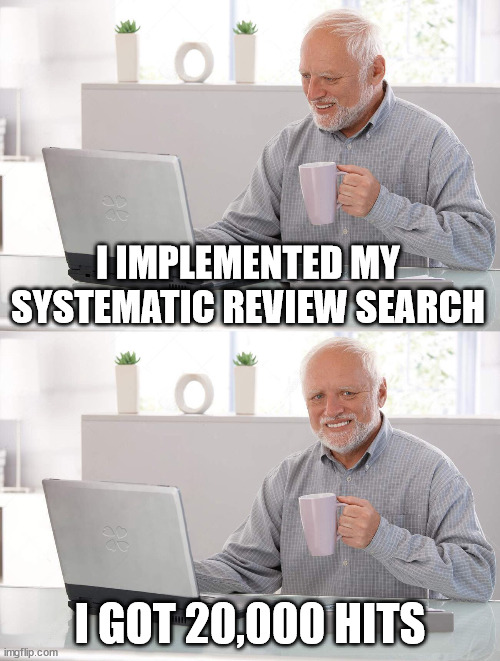
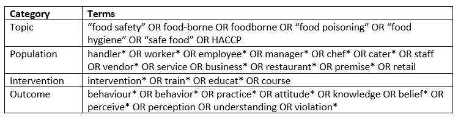
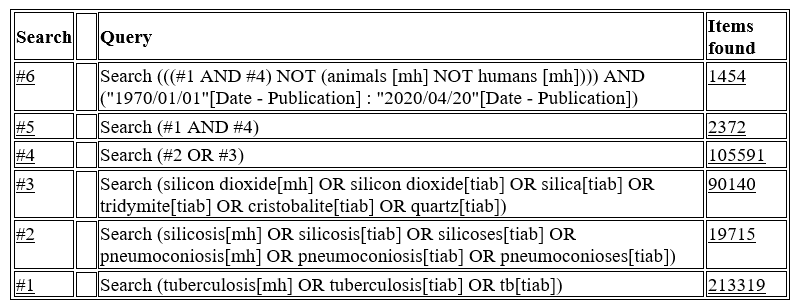
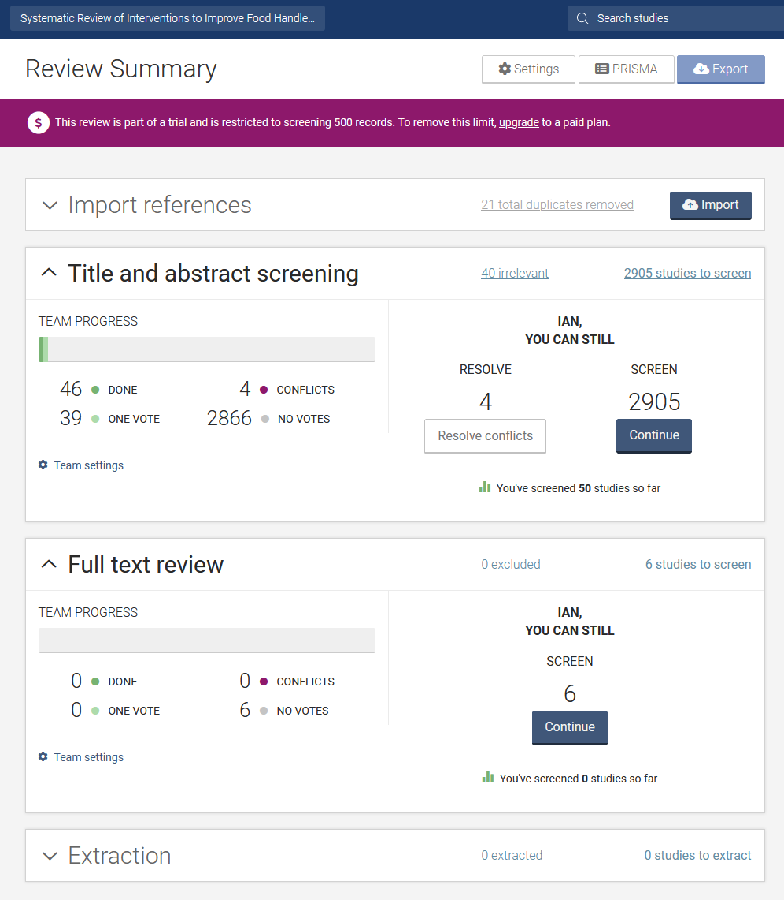

3 Search Strategy
The search strategy in a systematic review is critical to ensure that all potentially relevant studies are identified and captured in the review. It is a challenging task to ensure that the search captures as many relevant studies as possible, while also minimizing the number of irrelevant hits to keep the relevance screening process manageable. Support from a librarian or information specialist is highly recommended.

3.1 Peer-Reviewed Literature
The most important place to search for potentially relevant studies for a systematic review is bibliographic databases. The list of databases accessible through the TMU library is avialable here. The selection of which and how many databases to search should be conducted in consultation with a librarian. Some common options include:
- MEDLINE: is publicly accessible through the PubMed interface, or the OVID interface via the TMU library. It contains >35 million references for biomedical (including occupational and public health) literature.
- Embase: is a biomedical database with >30 million references, hosted by Elsevier.
- Scopus: is a multi-disciplinary database that covers multiple research fields, including all journals indexed in MEDLINE. It covers >14,000 scholarly sources.
- Web of Science: is another multi-disciplinary database containing references from >8500 international research journals.
In addition to the above, subject-specific and specialized databases may be useful to search depending on the topic. Examples of these include: PsycINFO for psychological literature, CINAHL for nursing and allied health literature, OSH References Collection for occupational health and safety literature, and Food Science and Technology Abstracts for food safety and nutrition literature. There are no specific rules for the number of databases to include, as this will depend on the review question, topic, and other factors, but typically reviews might search 3-7 different databases.
3.2 Search Algorithm
A search algorithm needs to be developed based on the review question, and implemented in each bibliographic database. The algorithm should be developed and tested in one of the databases before being adapted to the other databases. Developing a search algorithm for a systematic review is very complex and librarian assistance is strongly recommended.
Prior to developing a search algorithm, it is useful to identify some seed articles (i.e., examples of relevant articles). These are articles that you would expect to identify and include as relevant in your review based on the review question and eligibility criteria. Specifically, the title, abstract, and keywords of these articles should be reviewed to identify keywords that can be used to build the search algorithm. The keywords can also be used to help develop controlled vocabulary terms (see below for more details). Once the algorithm is fully developed, it should be tested in a database to ensure that it captures each of the seed articles.
The search algorithm should aim to balance sensitivity (i.e, the proportion of relevant studies identified from all relevant studies) with precision (i.e, the proportion of relevant studies identified from all studies/references identified). Increasing the sensitivity of the search will reduce its precision, and lead to a need to review more references.
The search algorithm will typically include combinations of search terms for each category of the question. For example, an intervention review would have search terms related to the population, the intervention, and the outcome, with additional potential terms for the topic or setting or other criteria. Within each category, terms are combined in parentheses (or through multiple individual searches) with the OR Boolean operator, and across categories with the AND operator. A NOT operator can also be used to exclude specific terms, but should be used with caution. To search for an exact phrase, it should be placed within quotation marks (e.g., “food safety”, “occupational health”).
An example search algorithm from Young et al. (2019) is shown below:

Another example is shown below for an occupational health risk factor review (Ehrlich et al. 2021), as implemented in PubMed:

In addition to the Boolean operators above, you can also consider proximity operators, which will search for a word within a certain number of places of another word (e.g., food adj3 safety in the OVID platform will search for those terms within three places of other).
Many databases have controlled vocabulary (i.e., standardized subject terms) that should also be searched as part of the search strategy in addition to text words (i.e., keywords). In MEDLINE, these are called MeSH terms. Finally, specific limits can be placed on certain search fields, such as publication dates or languages, if desired. The approach to implement such limits varies by database. An example of implementing a complex search in MEDLINE accessed through OVID is available here.
3.3 MeHS Headings Examples
You can see all MeSH terms related to public health in the following tree branch.
If using the PubMed interface, you can include a MeSH term in your search by adding ‘MeSH’ in square brackets beside the term (e.g., “Public Health”[Mesh]).
For text word searches, you should account for spelling variations and plural forms of words. For example, an asterisk symbol * is often used at the end of a word to capture all variant endings of the word (e.g., practice* will capture variations such as practices, practicing, practiced). Other wildcard terms can also be used to capture variant spellings. For example, in OVID, # in place of a letter will search for any letter in that spot (e.g., wom#n will search for woman and women).
For additional guidance on these different search approaches, see the McGill Library Knowledge Synthesis Search Guide.
As each database has its own searching rules, subject headings, and differences, the algorithm will need to be adapted to each database. There is a useful online tool called SRA Polyglot that can help translate search algorithms from one database to another.
Using the article you identified for your homework exercise from the last two weeks, determine the following:
- The search algorithm used, including any specific Boolean operators used
- Whether any controlled vocabulary terms or search filters were used
- The number and types of databases that were searched
3.4 Saving Search Results and De-duplication
Once the searches are implemented, the records can be saved as RIS (or other) files and imported into a reference management program, systematic review management program, or de-duplication tool for de-duplication. Some databases have restrictions on how many references can be exported at once, in which case the results will need to be exported in batches. All results should be documented, including saving the exact algorithm used in each database, search dates, and number of hits in each database.
Some systematic review management programs (see below) will automatically de-duplicate references (e.g., Covidence). Reference management programs (e.g., Zotero, Mendeley) can also be used for de-duplication, with the de-duplicated file exported and imported into the systematic review management program of choice. Finally, there is an online Systematic Review De-duplicator Tool that can be used for this purpose.
Using Scopus via the TMU Library, conduct an “Advanced document search” by reproducing the following algorithm from Young et al. (2019).
TITLE-ABS-KEY(("food safety" OR "food-borne" OR foodborne OR "food poisoning" OR “food hygiene” OR “safe food” OR HACCP) AND (handler* OR worker* OR employee* OR manager* OR chef* OR cater* OR vendor* OR staff OR service OR business* OR restaurant* OR premise* OR retail) AND (behaviour* OR behavior* OR practice* OR attitude* OR knowledge OR belief* OR perceive* OR perception OR understanding OR violation*) AND (intervention OR train* OR educat* OR course))
- How many hits did you get?
- Try setting a publication date restriction to exclude publications from 2018 to present to approximately reproduce the original search (which was conducted in January, 2018). Now how many hits to do you get?
- Now try saving the results as an RIS file. When exporting, make sure you select the abstract and keywords fields to include in your exported file. Try importing it into a reference management program such as Zotero or Mendeley.
- Finally, how might you translate this search algorithm into MEDLINE (OVID)? You can access MEDLINE through the TMU OVID account. What MeSH terms might you use for this algorithm?
3.5 Grey Literature
It may be useful to search for grey literature as part of your search strategy. This may help to identify studies that are not published in peer-reviewed journal articles, or those not indexed in major bibliographic databases. Some grey literature search options are noted below:
- Google Scholar: will specifically search for scholarly publications, most of which should be captured by your bibliographic database search, but could uncover additional studies.
- Policy Commons: is a grey literature database that contains reports, working papers, policy briefs, and other resources from organizations worldwide across many disciplines.
- OpenGrey: is another online database based in Europe that contains reports, dissertations, and other types of research documents.
- Targeted websites of organizations: you can search through the websites of specific organizations (e.g., governments, non-profit groups) that are known to publish research reports or other documents that might be relevant. This can also include targeted searching of the conference proceedings from prior relevant conferences (if not already indexed elsewhere).
3.6 Search Verification and Peer Review
It is important to verify that your search did not miss any important studies. One common method used for verification is to search the reference lists of all of your relevant articles (this can be done after you have reached the data extraction stage). You can also search the reference lists of other literature review articles conducted on the same topic as your review.
It is increasingly recommended to consider having your search strategy peer reviewed for accuracy before implementation. The Peer Review of Electronic Search Strategies (PRESS) Statement can be used as a checklist for this purpose.
3.7 Review Management
To facilitate the management of the relevance screening and data extraction steps, it is highly recommended to use a systematic review management program. Some commonly used programs include:
Most of these programs require a subscription to use, though some may offer free trials or discounts for students (e.g., Covidence). Other non-subscription based options could include spreadsheets or online forms (e.g., Google Forms), but these would be challenging to use for larger projects and could be prone to errors.
An example of a Covidence project and interface is shown below. TMU currently does not offer an institutional subscription to Covidence, though this may be provided in future years. Covidence does provide a free trial for students, which allows screening of up to 500 references and up to two reviewers per project. As such, it can be used for your course assignment 2.

3.8 Homework
For next week, and to help with preparing your second assignment, identify 2-3 different seed articles related to your proposed systematic review topic. Use these seed articles, along with your review question, to identify some keywords and keyword categories required to start building your search algorithm. We will discuss your findings at the start of next week’s class.